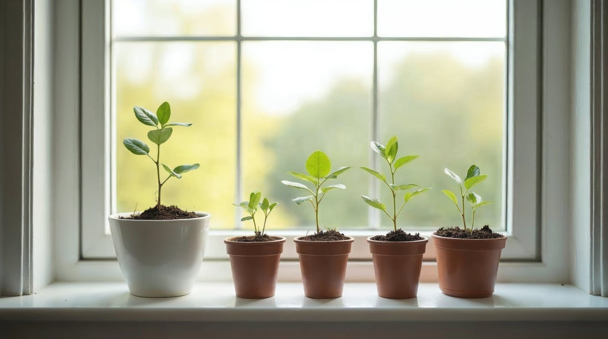
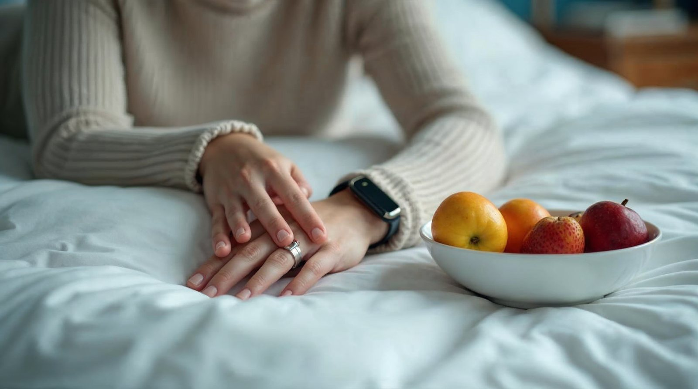
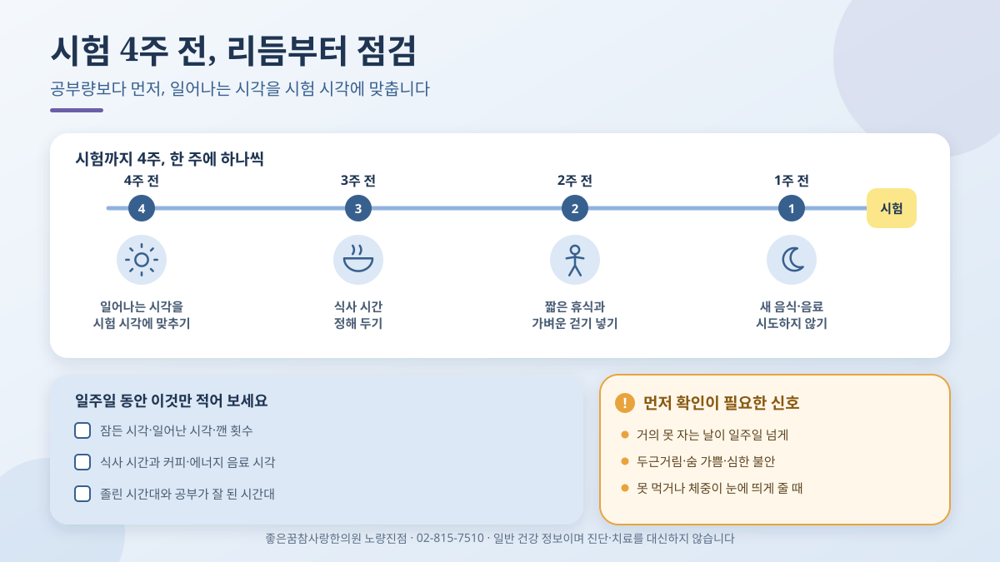

이종호 한의사 감수좋은꿈참사랑한의원 대표원장 (한의사 면허번호 19769)발행 2026-11-22 · 수정 2026-11-26
이 글의 차례
시험 4주 전이라면 공부량을 늘리기 전에 일어나는 시각부터 시험 시각에 맞춰 고정해 두는 것이 먼저입니다. 시험이 가까워지면 잠을 줄여 공부 시간을 늘리고 싶어집니다. 하지만 몇 주 동안 이어지는 수면 부족은 집중력과 소화에 먼저 영향을 주는 경우가 많습니다.
노량진 학원가에서 겨울 시험을 준비하는 분들은 아침 강의 자리를 맡으려고 일찍 나섰다가, 밤에는 독서실이나 고시원에서 늦게까지 버티는 생활이 이어지기 쉽습니다. 임용·편입처럼 겨울에 치르는 시험이든, 봄 공무원 시험을 겨울 동안 준비하는 경우든, 남은 4주는 새 공부법을 들이기보다 시험 날과 같은 하루를 몸에 익히는 기간으로 써 보시길 권합니다.
왜 이런 불편이 생길 수 있나요
- 잠을 줄여 공부 시간을 늘리면 며칠은 버틸 수 있지만, 부족한 잠이 쌓이면 낮 졸음과 집중력 저하로 먼저 나타나는 경우가 많습니다.
- 주말에 몰아서 자거나 일어나는 시각이 들쭉날쭉하면 몸의 하루 시계가 흔들려, 시험 시간에 머리가 맑지 않을 수 있습니다.
- 끼니를 거르거나 밤늦게 먹으면 속이 불편해 잠이 얕아지고, 다시 아침 입맛이 떨어지는 순환이 생기기 쉽습니다.
- 수험 생활이 길어지면 낮에 햇빛을 보는 시간과 걷는 시간이 줄어, 밤이 되어도 몸이 잘 쉬지 못하는 경우가 있습니다.
- 한의학에서는 잠과 소화, 긴장을 따로 떼지 않고 하루 리듬 안에서 함께 살핍니다.
먼저 이렇게 여쭙니다
- 최근 한 주 동안 일어난 시각이 날마다 얼마나 달랐나요?
- 하루에 식사를 몇 번, 몇 시쯤 하고 있나요?
- 낮에 가장 졸린 시간대는 언제인가요?
- 시험 시간과 같은 시간대에 머리가 맑은 날이 있나요?
- 커피나 에너지 음료는 하루에 몇 잔, 몇 시까지 마시나요?
- 시험 날 아침 숙소에서 시험장까지 걸리는 시간은 얼마인가요?
일상에서 먼저 해 볼 수 있는 것
- 시험 시작 시각에 맞춰 일어나는 시각을 조금씩 당겨 두기
- 식사 시간을 정해 두어 시험 당일 속이 낯설지 않게 하기
- 공부 시간표에 짧은 휴식과 가벼운 걷기를 함께 넣기
- 시험 직전 주에는 새로운 음식이나 음료를 시도하지 않기
- 잠들기 1시간 전에는 화면을 끄고 다음 날 공부할 것만 적어 두기
- 일어나면 커튼을 열거나 잠깐 밖에 나가 아침 햇빛 보기
- 낮잠은 20분 안쪽으로 짧게, 늦은 오후 이후에는 피하기

4주를 이렇게 나눠 점검해 보세요
- 4주 전: 일주일 동안 잠든 시각, 일어난 시각, 식사 시각을 그대로 적어 지금의 리듬부터 확인합니다.
- 3주 전: 시험 날 일어날 시각과 지금 일어나는 시각의 차이를 보고, 며칠 간격으로 15~30분씩 당겨 봅니다.
- 2주 전: 모의고사나 기출 풀이를 시험 시간과 같은 시간대에 맞추고, 그날 아침 식사와 커피도 시험 날처럼 해 봅니다.
- 마지막 주: 새로운 공부법, 음식, 영양제는 들이지 않고 지금까지 맞춰 둔 기상·식사 시각을 그대로 지킵니다.
상황별 예시
- 예를 들어 새벽 강의 자리를 맡으려고 6시에 나서지만 밤 1~2시까지 독서실에 있는 경우라면, 밤 공부를 더 늘리기보다 잠드는 시각부터 조금씩 당기고 낮에 졸리는 시간대를 기록해 보도록 안내합니다.
- 고시원에서 혼자 지내며 컵밥이나 편의점 음식으로 끼니를 때우고 식사 시간이 날마다 다른 경우라면, 메뉴보다 먹는 시각을 먼저 고정해 보는 것부터 함께 정합니다.
- 지방에서 올라와 혼자 준비하는 자녀가 걱정되는 가족이라면, 공부 진도보다 몇 시에 일어났는지, 끼니는 몇 시에 먹었는지를 묻는 짧은 연락이 리듬을 지키는 데 도움이 될 수 있습니다.

스스로 점검해 보세요
- 최근 일주일 동안 일어난 시각이 1시간 넘게 차이 난 날이 있나요?
- 시험 시작 시각에 머리가 맑았던 날이 일주일에 며칠인가요?
- 하루 세끼 가운데 자주 거르는 끼니가 있나요?
- 오후 늦게나 밤에 커피, 에너지 음료를 마시는 날이 많나요?
- 주말에 평일보다 두 시간 넘게 늦잠을 자나요?
- 잠자리에 누워 30분 넘게 공부 생각이 이어지는 날이 많나요?
- 낮에 햇빛을 보는 시간이 거의 없나요?
한의원에서 함께 살필 수 있는 경우
- 시험을 앞두고 잠과 식사 시간이 무너졌다면 하루 리듬 전체를 함께 살핍니다.
- 공부 시간이 늘어 몸이 지쳤다면 생활 리듬과 쉬는 시간을 봅니다.
- 시험 준비 중 잠이 얕아졌다면 잠들기 전 습관부터 여쭙니다.
- 기상 시각을 맞춰 보아도 밤에 자주 깨거나 새벽에 일찍 깨는 경우 잠의 모양을 함께 살핍니다.
좋은꿈참사랑한의원에서는 먼저 잠과 하루 리듬을 충분히 듣고, 진맥을 기본으로 하고 필요하다고 판단될 때 설진을 더해 몸 상태를 살핀 뒤 침이나 한약 상담 등 맞는 방법을 함께 정합니다. 첫 방문에는 접수 때 기본 정보를 적고, 시험 날짜와 지금의 기상·식사 시각, 복용 중인 약과 영양제를 여쭌 뒤 진찰로 넘어갑니다.
귀가 전에는 남은 기간에 맞춰 이번 주에 바꿔 볼 것 한두 가지와 다음에 확인할 일을 알려 드리고, 다시 오시면 그사이 지낸 이야기를 이어서 여쭙습니다.
진료시간은 평일 09:30~20:00(점심시간 13:00~14:00), 토·일·공휴일 09:30~15:00이라 학원 시간표에 맞춰 평일 저녁이나 주말로 예약하실 수 있습니다. 노량진역(1·9호선) 3번 출구에서 마을버스 동작01을 타고 신동아리버파크에서 내리시면 됩니다.
이렇게 기록해 오시면 상담이 쉬워집니다
- 일주일 동안 잠든 시각, 일어난 시각, 밤에 깬 횟수
- 하루 식사 시간과 커피·에너지 음료를 마신 시각
- 낮에 가장 졸렸던 시간대와 공부가 잘 된 시간대
- 시험 날짜와 시험 시작 시각
- 복용 중인 약과 영양제 이름
얼마나 지켜보고 언제 상담할까요
- 기상 시각을 맞춘 뒤 1~2주 동안 낮 졸음과 집중이 어떤지 지켜봅니다. 처음 며칠은 오히려 피곤하게 느껴질 수 있습니다.
- 2주 넘게 맞춰 보아도 잠들기까지 30분 넘게 걸리는 날이 일주일에 서너 번 이상이면 상담을 권합니다.
- 잠을 거의 못 잔 날이 사흘 넘게 이어지거나 식사를 제대로 못 하는 날이 늘면, 시험이 끝날 때까지 기다리지 말고 먼저 상담해 보세요.
이런 증상은 먼저 확인이 필요합니다
- 잠을 거의 못 자는 날이 일주일 넘게 이어지는 경우
- 가슴 두근거림, 숨 가쁨, 심한 불안이 함께 있는 경우
- 스스로를 해칠 생각이 들면 ☎ 109로 바로 연락하세요.
이런 신호가 있으면 한의원보다 가까운 병원이나 응급실을 먼저 찾으세요.
함께 읽으면 좋은 글
- 일어나는 시각을 일정하게 하면 잠이 달라질까요?
- 시험 전날 저녁은 어떻게 보내면 컨디션을 지키는 데 도움이 되나요?
- 시험 당일 아침 식사와 카페인은 어떻게 계획하면 되나요?

여쭙는 것
- 최근 한 주 동안 일어난 시각이 날마다 얼마나 달랐나요?
- 하루에 식사를 몇 번, 몇 시쯤 하고 있나요?
- 낮에 가장 졸린 시간대는 언제인가요?
생활에서 해 볼 것
- 시험 시작 시각에 맞춰 일어나는 시각을 조금씩 당겨 두기
- 식사 시간을 정해 두어 시험 당일 속이 낯설지 않게 하기
- 공부 시간표에 짧은 휴식과 가벼운 걷기를 함께 넣기
한의원에서 함께 살필 것
- 시험을 앞두고 잠과 식사 시간이 무너졌다면 하루 리듬 전체를 함께 살핍니다.
- 공부 시간이 늘어 몸이 지쳤다면 생활 리듬과 쉬는 시간을 봅니다.
- 시험 준비 중 잠이 얕아졌다면 잠들기 전 습관부터 여쭙니다.
먼저 확인이 필요한 신호
- 잠을 거의 못 자는 날이 일주일 넘게 이어지는 경우
- 가슴 두근거림, 숨 가쁨, 심한 불안이 함께 있는 경우
- 스스로를 해칠 생각이 들면 109로 바로 연락하세요.
한눈에 보는 표
| 구분 | 핵심 |
|---|---|
| 여쭙는 것 | 최근 한 주 동안 일어난 시각이 날마다 얼마나 달랐나요? 하루에 식사를 몇 번, 몇 시쯤 하고 있나요? |
| 생활에서 해 볼 것 | 시험 시작 시각에 맞춰 일어나는 시각을 조금씩 당겨 두기 식사 시간을 정해 두어 시험 당일 속이 낯설지 않게 하기 |
| 한의원에서 함께 살필 것 | 시험을 앞두고 잠과 식사 시간이 무너졌다면 하루 리듬 전체를 함께 살핍니다. 공부 시간이 늘어 몸이 지쳤다면 생활 리듬과 쉬는 시간을 봅니다. |
| 먼저 확인이 필요한 신호 | 잠을 거의 못 자는 날이 일주일 넘게 이어지는 경우 가슴 두근거림, 숨 가쁨, 심한 불안이 함께 있는 경우 |
자주 묻는 질문
시험 직전에는 밤을 새워서라도 공부해야 하지 않나요?
밤샘 뒤에는 다음 날 집중력이 떨어지는 경우가 많아, 시험이 가까울수록 평소 수면 시간을 지키는 쪽을 권합니다.
시험 당일 아침 시각에 맞추려면 언제부터 준비하나요?
여유가 있다면 3주 전쯤부터, 늦어도 한두 주 전에는 일어나는 시각을 조금씩 당겨 보도록 안내합니다.
한의원에서는 무엇을 보나요?
잠의 모양, 식사와 소화, 긴장 정도를 함께 묻고 생활 전체의 리듬 속에서 살핍니다.
시험이 4주도 안 남았으면 늦은 건가요?
늦지 않습니다. 남은 기간이 짧을수록 일어나는 시각 하나만 먼저 고정하고, 식사 시간은 그다음에 맞추는 식으로 한 가지씩 바꿔 보도록 안내합니다.
좋은꿈참사랑한의원은 재진 때 지난번 이야기부터 이어서 여쭙니다. 진료시간과 예약은 오시는 길에서 확인하세요.
어디서 상담받을 수 있나요?
좋은꿈참사랑한의원은 서울 동작구 만양로2길 2 신성빌딩 3층·5층(서울 동작구 상도동, 7호선 상도역 3번 출구 근처)에 있습니다. 한의사 3명(이종호 대표원장, 조영기 수석진료원장, 정원영 진료원장)이 진료합니다. 진료시간은 평일 09:30~20:00(점심 13:00~14:00), 토·일·공휴일 09:30~15:00이며, 방문 전 전화로 확인을 권합니다. 예약은 네이버 예약, 카카오톡 상담, 전화 02-815-7510로 받습니다.
이 글은 일반적인 건강 정보이며 개인의 진단이나 치료를 대신하지 않습니다. 증상이 있거나 복용 중인 약이 있다면 진료를 통해 확인하세요. 치료 효과는 개인마다 다를 수 있습니다.
작성 기준: 일반적으로 알려져 있는 건강 정보를 참고해 정리했습니다(대표원장 감수). 증상 기록은 1~2주 동안 하루 1회, 비슷한 시간에 적어 오시면 지난 상태와 비교하기 쉽습니다.